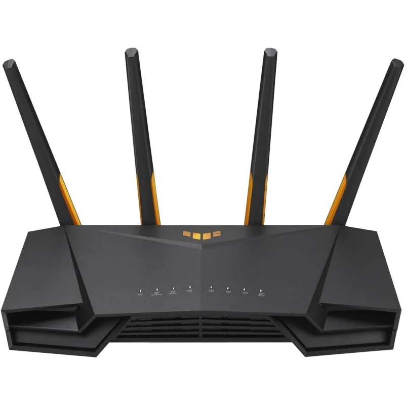

Envia informação da Internet para os seus dispositivos pessoais, como um computador, um telemóvel ou um tablet.
| Sites | Comprar em | Tipo de conexão WAN | Marca do produto | cor |
|---|---|---|---|---|
| 1 | Pc Componentes | Rj-45 | ASUS | Preto |
| 2 | Leroy Merlin | Rj-45 | ASUS | Preto |
| 3 | Global data | Rj-45 | TP-Link | Branco |
| 4 | Worten | Rj-45 | TP-Link | Preto |
| 5 | Chip 7 | Rj-45 | CUDY | Preto |
| 6 | Radio Popular | Rj-45 | XIAOMI | Branco |